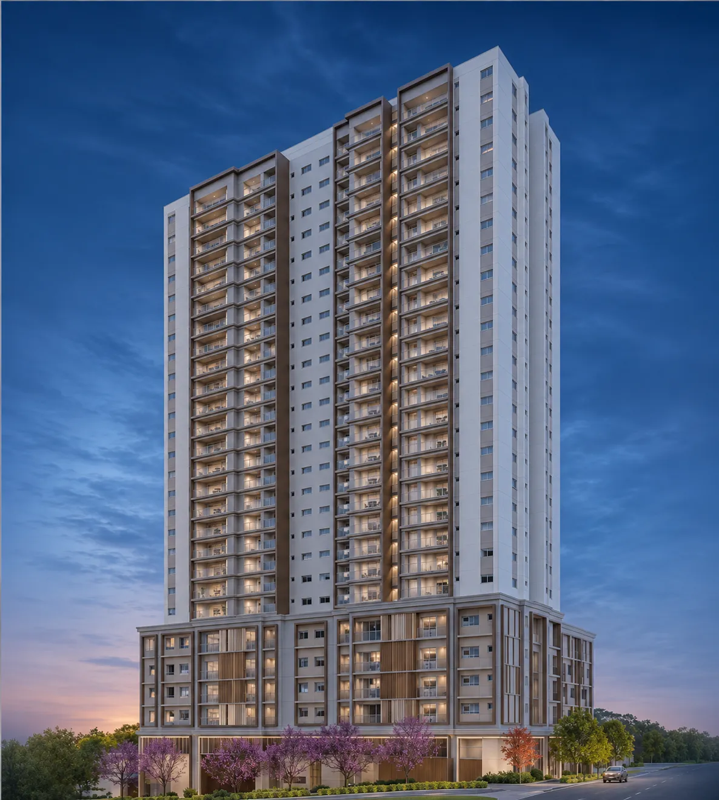
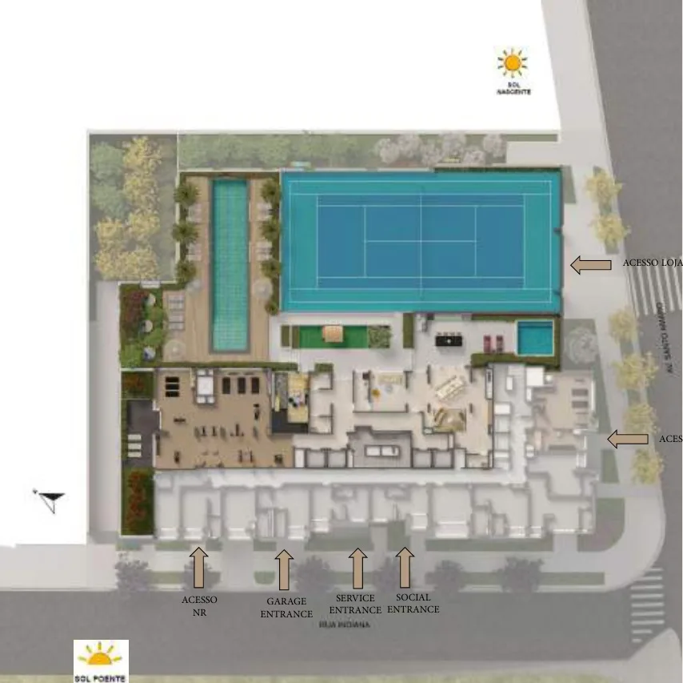

Arquitetura e localização
Da rua ao jardim
Entre a entrada social e os espaços de lazer, o projeto organiza experiências distintas para a rotina. Na Rua Indiana, 74, o material da Living situa o empreendimento no entorno do Bosque do Brooklin e da Hípica Paulista.
O book apresenta lobby, coworking, academia, playground e piscina nas páginas 32 a 40.
Implantação
Como o térreo se organiza

Inteligência arquitetônica
Sete configurações residenciais
A planta de 127,70 m² tem uma opção de quatro dormitórios e duas suítes. Compare as plantas oficiais antes de escolher a configuração.
Estudo de pré-lançamento · novembro de 2026
Valores e fluxo
Referências do estudo da Living. Valores e condições sujeitos à confirmação. A seleção abaixo reúne exemplos conferidos do documento.
Parecer Yincorp
Comece pela planta e pela rotina que ela permite. Depois, compare as parcelas da unidade selecionada e confirme a configuração com o consultor. A planta de 71,70 m² oferece alternativas de dois dormitórios com uma suíte ou duas suítes. A de 127,70 m² atende quem precisa avaliar um quarto adicional.
Prévia de avaliação